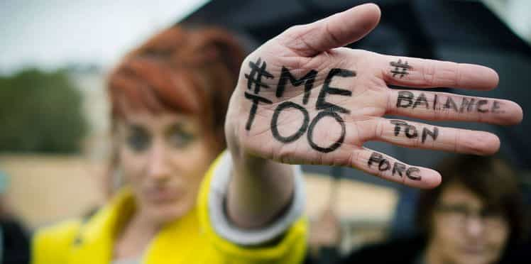
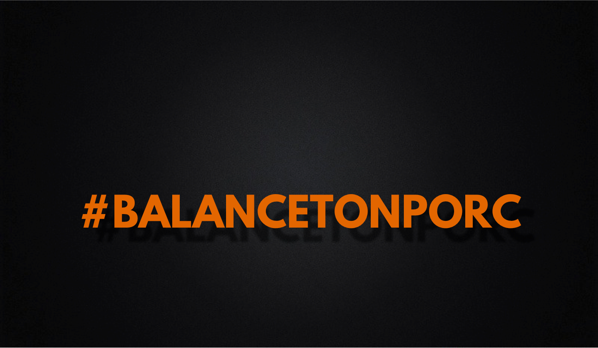
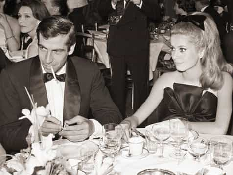
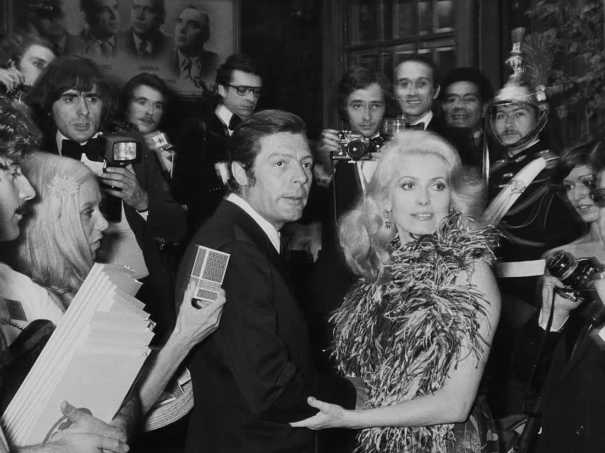
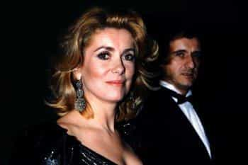
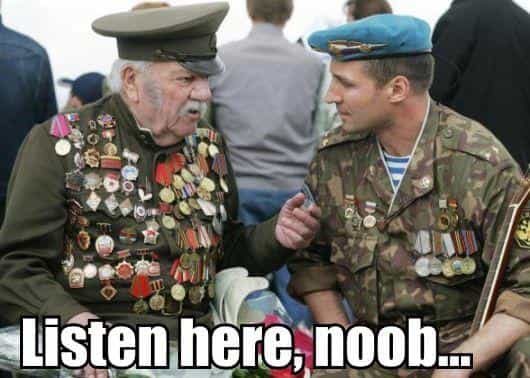
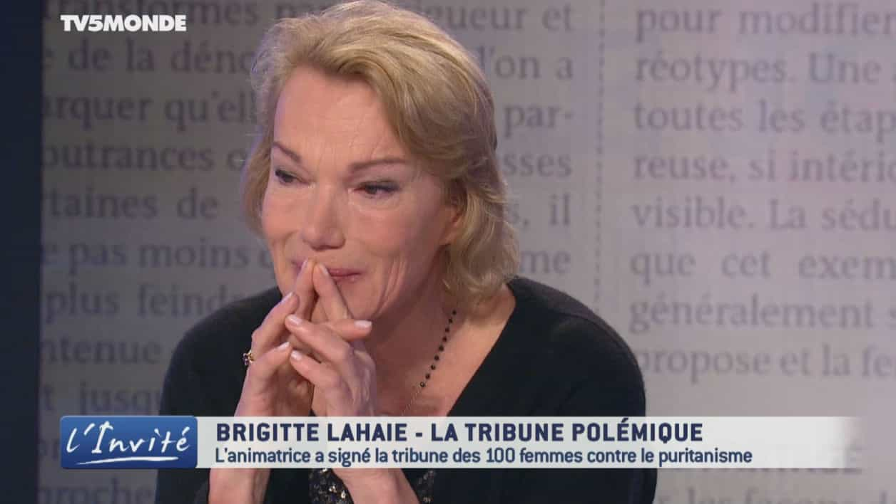
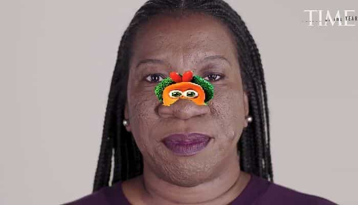

One hundred French women lead by actress Catherine Deneuve have signed an open letter defending men’s “freedom to pester” women, accusing the new wave of international feminists to cry rape “on a whim,” following the Weinstein affair and the “tsunami” of sexual harassment allegations triggered by the #MeToo hashtag.
It quickly turned into an all-out verbal war between formerly beautiful women, used-up sluts, and frigid feminists.
The Two Sides Of The Story

The text trashes third wave feminism for being more focused on “witch hunts” of imaginary rapists and a thinly veiled “hatred of men” rather than the advancement of women in society, something that we are quite aware of at ROK. A “freedom to offend” always needs to be present, according to Deneuve.
The authors expressed themselves after legions of “rape stories” appeared on social networks when the hashtag “#BalanceTonPorc” (“Rat on your pig”) came to be, unloading a flow of sexual harassment accusations without any kind of proof.
We are probably the Internet platform that has written the most about the disastrous effect of false rape accusations, even if justice proves that the accused is innocent.

Feminists were particularly adamant about using the word “porc” (male pig) to refer to their real or imaginary sexual tormenters. It used to be reserved for extreme forms of sexual perversion, but lost its original meaning after liberal women hijacked it.
“Porc” does not simply refer to a pig, but specifically to a male one, only good for slaughter. This is the same slur violent communists and immigrant rioters use to insult the police. It carries a notion of seeing the opponent as an animal and a physical desire to murder the target.
Just like everyone who does not agree with liberals is a “racist,” everyone who does not bow down to feminist lunacy is a male pig whose primary purpose is to be slaughtered.
Catherine Deneuve, “The” French Dark Triad Woman

Deneuve was especially known for her notorious femme fatale film roles, using men’s attention as a weapon, such as in the film Belle de Jour. We are talking about a woman that had generations of men in the palm of her hand. She did not just have the looks; she was perfectly aware of their power and knew how to use them.
As a dark triad woman, she only associated with dark triad alphas and high-profile mates, either world-class actors or business magnates. She is the archetype of the French predatory female, an endangered, almost extinct species nowadays.



Deneuve had it all and perfectly understood that she owed everything to her looks, the men she had access to, the male attention derived from it, and the roles and media coverage it gave her.
Cui Bono?
Even if she reached her peak in another era, Catherine Deneuve can’t be classified as a conservative. She is pro-abortion, stands in support of illegal immigrants, and took part in the first wave of feminism. The female group which co-signed the letter with cannot really be accused of being “reactionary,” “anti-feminist,” or “conservative” either.
The group is mainly composed of feminist novelists and includs notoriously promiscuous woman and writer Catherine Millet, Jewish thinkers, and even B. Lahaie, a former porn star turned radio host.
Brigitte Lahaie. We’ll deal with her in a minute.
Far from being a pillar of virtue, Catherine could nonetheless be genuine in her defense of men (which would be worthy of praise), but I make a point of never listening to what women say; instead, I observe what they do.
She might be warning the new generation of women not to sink their own boats by attacking the permanent victimhood of modern feminists, showing them how they should be more realistic about the realities of the sexual marketplace and use the system in a clever manner instead of seeking to destroy it all.
That letter would translate to, “My fellow promiscuous women, don’t reject male attention. You love it, I loved it, everyone knows it. Use it to your advantage, instead.”

Artist’s depiction of Catherine Deneuve teaching modern women about the advantages of male attention.
Feminists: “Moderates Get The Bullet Too”
The reaction to Deneuve didn’t take long, as Grave Robber in Chief Macron recently hired a dyke to create a law banning men from approaching women in the street, instead of focusing on the gang rape culture and sexual violence in the poorest immigrant neighbourhoods in Paris or Marseilles.
Another one of the letter’s targets is Sweden and its migrant rape epidemic, with their government more focused on emasculating their last remaining local males and redefining consent. Alice Bah Kuhnke, anointed member of the Swedish Cultural Collapse Fifth Column, did not wait and publicly “laughed” at the letter.
Many voices in Hollywood, including pedophile enablers, Weinstein accomplices, and post-wall harlots like Asia Argento were also quick to paint Catherine Deneuve as a traitor to dah sistas’ struggle:
One tiny step out of line and feminists eat their own. Deneuve was not the only one attacked. Brigitte Lahaie, a former porn star and now radio host whose work focuses on female sexuality and well-being and who also signed the letter, tried to justify her position and debate in a civil manner with rabid feminist Caroline de Haas on the matter.
Facing a hostile reception on the show, as the debate heated up, she stated that “women can reach orgasm during rape.” While this is true and therapists would agree (sources: 1, 2, 3), feminists really do not like to hear it. Even the international lügenpresse modified her words and translated it as “women enjoy being raped.”

The Twitter and social network lynching that followed pushed her to apologise, in tears, on live television.
The Women Behind #MeToo and #BalanceTonPorc

Sandra Muller created #BalanceTonPorc. The fact that she looks like a
mystery meat version of Rosie O’Donnell will not surprise anyone among the red-pilled junta.

Tanara Burke created #MeToo
These pictures explain the origins of this madness. Overweight, lonely women beaten with the ugly stick or with nostrils so large they can use them to store walnuts for the winter invent issues that might grant them the attention men never gave them.
Caroline de Haas (the fat one) is the main agitator for #MeToo and #BalanceTonPorc in France and one of the most virulent critics of Deneuve, branding her “one of the pig’s allies.”
Here she is pictured with NVB, former Minister of Education, Muslim government infiltrator and fellow hideous short-haired woman. She is the leader of the governmental jihad against the evil patriarchy and supporting the introduction of Arabic as a second language in every French school.
Feminists and sharia enablers strangely get along well.
Si les femmes étaient logiques, ça se saurait
It is essentially a battle between former beautiful women who are ready to sacrifice to keep the attention and money flowing (no one accused Weinstein until the roles stopped coming), and ugly women inventing stalkers and rapists for themselves because they’ve hardly ever felt the embrace of a man, let alone a desirable one.
We are facing a textbook example of the sour grapes phenomenon where washed up carousel riders with too much time on their hands and grossly unattractive women who were never given any attention try to take their revenge on the more fortunate, all out of sheer jealousy.
In their land of make believe, those ugly root vegetables compensate for absent masculine attention by another type of attention created by the “rape survivor card.” They call for the neutering and death of men so that attractive women feel their misery by being deprived of actual male attention. “If I am not happy, why should you be?”
Read More: The #MeToo Campaign Compares Not Replying To A Girl’s Texts With Raping Her